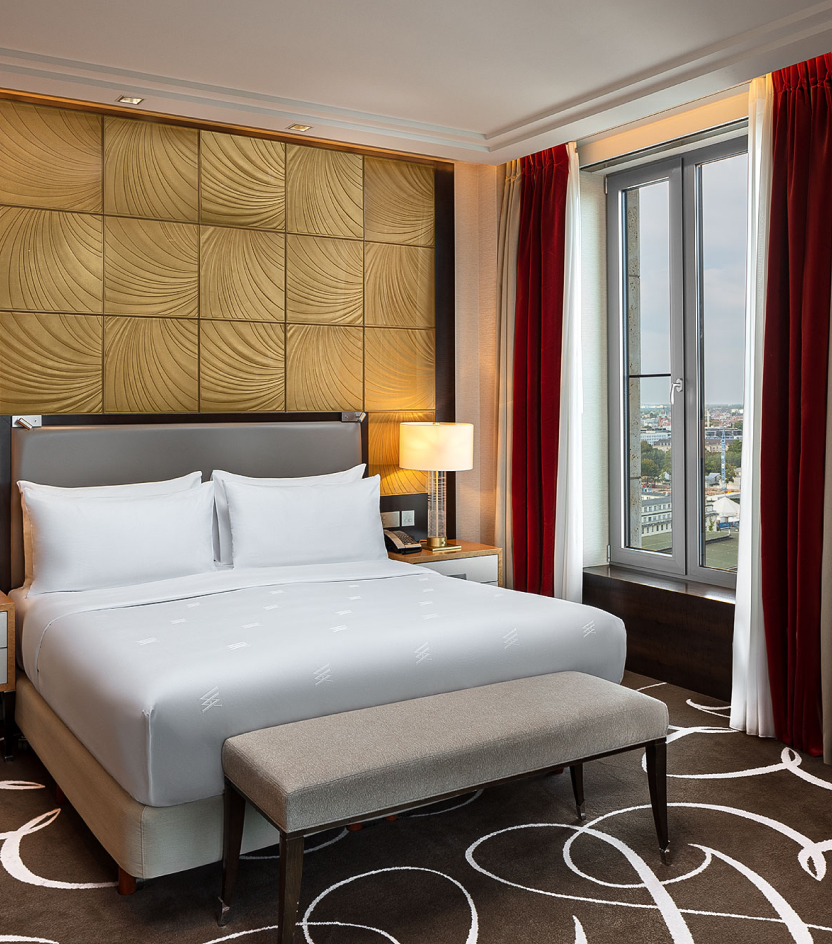
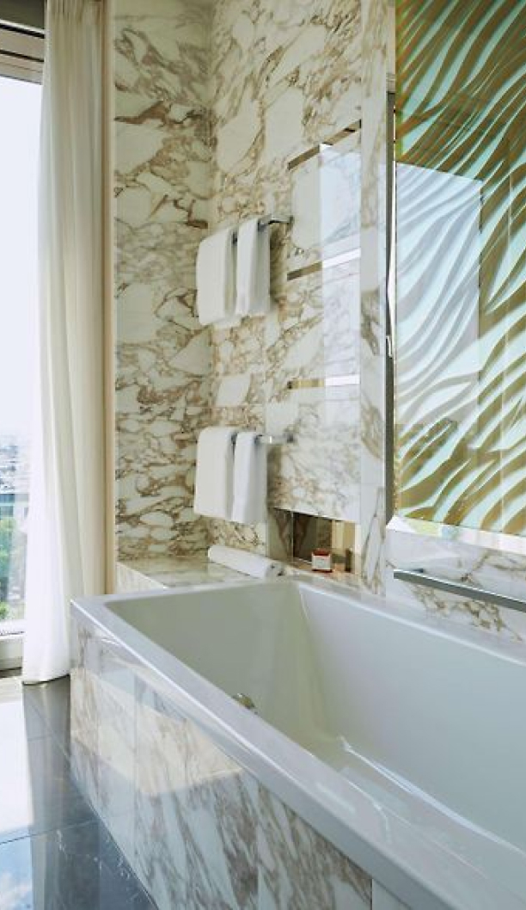
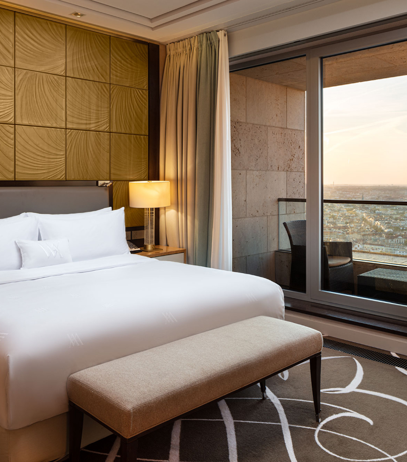

Das luxuriöse Zimmer im Waldorf Astoria Berlin, das im Hotelranking einen Spitzenplatz einnimmt,
gilt als eines der besten seiner Kategorie. Dieses Zimmer ist ein brandneuer Raum, der gerade
renoviert und mit allen modernen Annehmlichkeiten und stilvollem Design ausgestattet wurde.
In einem luxuriösen Zimmer erwartet Sie Komfort und Gemütlichkeit, eine Atmosphäre, in der Sie
sich entspannen und erholen können. Die Geräumigkeit und Eleganz moderner Möbel, die Qualität der
Bettwäsche und Matratzen sowie die Liebe zum Detail schaffen eine einzigartige Umgebung für Ihren
Komfort.
Das Waldorf Astoria Berlin liegt der Sicherheit seiner Gäste am Herzen und trifft alle notwendigen
Vorkehrungen. Es werden strenge Sauberkeits- und Hygieneprotokolle befolgt und alle Einrichtungen
werden regelmäßig desinfiziert und in einwandfreiem Zustand gehalten. Ihr Aufenthalt wird sicher
und geschützt sein.

FAMILIENWOHNUNG

Das Familienapartment im Waldorf Astoria Berlin ist der ideale Ort für einen komfortablen
Aufenthalt mit der ganzen Familie. Es nimmt im Ranking der Hotels einen Spitzenplatz ein und gilt
als eines der Besten seiner Kategorie. Die Wohnung wurde gerade eröffnet und komplett renoviert,
wobei neuestes Design und moderne Annehmlichkeiten kombiniert wurden.
Das Familienapartment berücksichtigt die Bedürfnisse der Familie und bietet ausreichend Platz für
ein komfortables Wohnen aller Mitglieder. Es verfügt über ein geräumiges Wohnzimmer, separate
Schlafzimmer und eine voll ausgestattete Küche, in der Sie ein nahrhaftes Frühstück oder
Abendessen für Ihre Familie zubereiten können.
Ein wichtiger Aspekt bei einem Aufenthalt im Waldorf Astoria Berlin ist die Sicherheit. Das Hotel
unterhält strenge Sicherheitsmaßnahmen, um sicherzustellen, dass sich die Gäste sicher fühlen.
Alle Räumlichkeiten werden regelmäßig desinfiziert, Hygieneprotokolle werden befolgt und der
Sauberkeitszustand wird überwacht.

TURM-SUITE
Die Tower Suite im Waldorf Astoria Berlin ist ein außergewöhnlicher Raum, der luxuriöse
Unterkünfte und ein beispielloses Serviceniveau bietet. Das Hotel gehört zu den besten Hotels in
Deutschland und erhält aufgrund seines hervorragenden Rufs und der Qualität der angebotenen
Dienstleistungen eine hohe Bewertung.
Die Tower Suite ist ein neuer und kürzlich renovierter Raum, der zeitgenössisches Design und
Eleganz präsentiert. Ihr Zimmer befindet sich im historischen Turm des Hotels und bietet einen
einzigartigen Blick auf die Stadt und die umliegende Landschaft. Sie finden ein luxuriöses
Schlafzimmer mit einem bequemen Bett, ein geräumiges separates Wohnzimmer mit modernen Möbeln und
ein gut ausgestattetes Badezimmer mit Dusche und Badewanne. All dies schafft einen luxuriösen und
gemütlichen Raum für Ihren Aufenthalt.
Das Waldorf Astoria Berlin hält hohe Sicherheitsstandards ein und ergreift alle notwendigen
Maßnahmen zum Schutz der Gäste. Alle Räumlichkeiten werden systematisch desinfiziert und die
Einhaltung von Hygieneprotokollen ist obligatorisch. Die Sicherheit jedes Gastes hat für das Hotel
oberste Priorität, damit Sie sich während Ihres Aufenthalts sicher und geborgen fühlen können.